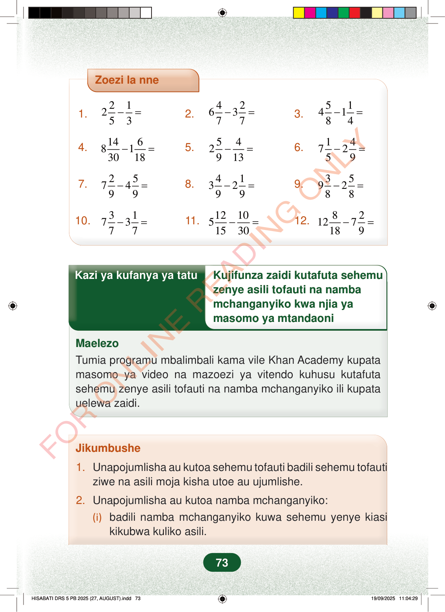

Zoezi la nne1.212 53−=2.426377−=3.514184−=4.146813018−=5.542913−=6.147259−=7.257499−=8.413299−=9.359288−=10.317377−=11.121051530−=12.82127189−=Kazi ya kufanya ya tatuKujifunza zaidi kutafuta sehemuzenye asili tofauti na nambamchanganyiko kwa njia yamasomo ya mtandaoniMaelezoTumia programu mbalimbali kama vile Khan Academy kupatamasomo ya video na mazoezi ya vitendo kuhusu kutafutasehemu zenye asili tofauti na namba mchanganyiko ili kupatauelewa zaidi.Jikumbushe1.Unapojumlisha au kutoa sehemu tofauti badili sehemu tofautiziwe na asili moja kisha utoe au ujumlishe.2.Unapojumlisha au kutoa namba mchanganyiko:(i)badili namba mchanganyiko kuwa sehemu yenye kiasikikubwa kuliko asili.73
Zoezi la nne
1. 2 1 2 5 3 − = 2. 4 2 6 3 7 7 − = 3. 5 1 4 1 8 4 − =
4. 14 6 8 1 30 18 − = 5. 5 4 29 13 − = 6. 1 4 7 2 5 9 − =
7. 2 5 7 4 9 9 − = 8. 4 1 3 2 9 9 − = 9. 3 5 9 2 8 8 − =
10. 3 1 7 3 7 7 − = 11. 12 10 515 30 − = 12. 8 2 12 7 18 9 − =
Kazi ya kufanya ya tatu Kujifunza zaidi kutafuta sehemu
zenye asili tofauti na namba mchanganyiko kwa njia ya masomo ya mtandaoni
Maelezo Tumia programu mbalimbali kama vile Khan Academy kupata masomo ya video na mazoezi ya vitendo kuhusu kutafuta sehemu zenye asili tofauti na namba mchanganyiko ili kupata uelewa zaidi.
Jikumbushe
1. Unapojumlisha au kutoa sehemu tofauti badili sehemu tofauti ziwe na asili moja kisha utoe au ujumlishe.
2. Unapojumlisha au kutoa namba mchanganyiko: (i) badili namba mchanganyiko kuwa sehemu yenye kiasi
kikubwa kuliko asili.
73
Zoezi la nne lenye maswali 12 ya kutoa namba mchanganyiko na sehemu. Kila swali lina nafasi ya kuandika jibu.Zoezi la nne1.<math><mrow><mn>2</mn><mfrac><mn>2</mn><mn>5</mn></mfrac><mo>−</mo><mfrac><mn>1</mn><mn>3</mn></mfrac><mo>=</mo></mrow></math>2.<math><mrow><mn>6</mn><mfrac><mn>4</mn><mn>7</mn></mfrac><mo>−</mo><mn>3</mn><mfrac><mn>2</mn><mn>7</mn></mfrac><mo>=</mo></mrow></math>3.<math><mrow><mn>4</mn><mfrac><mn>5</mn><mn>8</mn></mfrac><mo>−</mo><mn>1</mn><mfrac><mn>1</mn><mn>4</mn></mfrac><mo>=</mo></mrow></math>4.<math><mrow><mn>8</mn><mfrac><mn>14</mn><mn>30</mn></mfrac><mo>−</mo><mn>1</mn><mfrac><mn>6</mn><mn>18</mn></mfrac><mo>=</mo></mrow></math>5.<math><mrow><mn>2</mn><mfrac><mn>5</mn><mn>9</mn></mfrac><mo>−</mo><mfrac><mn>4</mn><mn>13</mn></mfrac><mo>=</mo></mrow></math>6.<math><mrow><mn>7</mn><mfrac><mn>1</mn><mn>5</mn></mfrac><mo>−</mo><mn>2</mn><mfrac><mn>4</mn><mn>9</mn></mfrac><mo>=</mo></mrow></math>7.<math><mrow><mn>7</mn><mfrac><mn>2</mn><mn>9</mn></mfrac><mo>−</mo><mn>4</mn><mfrac><mn>5</mn><mn>9</mn></mfrac><mo>=</mo></mrow></math>8.<math><mrow><mn>3</mn><mfrac><mn>4</mn><mn>9</mn></mfrac><mo>−</mo><mn>2</mn><mfrac><mn>1</mn><mn>9</mn></mfrac><mo>=</mo></mrow></math>9.<math><mrow><mn>9</mn><mfrac><mn>3</mn><mn>8</mn></mfrac><mo>−</mo><mn>2</mn><mfrac><mn>5</mn><mn>8</mn></mfrac><mo>=</mo></mrow></math>10.<math><mrow><mn>7</mn><mfrac><mn>3</mn><mn>7</mn></mfrac><mo>−</mo><mn>3</mn><mfrac><mn>1</mn><mn>7</mn></mfrac><mo>=</mo></mrow></math>11.<math><mrow><mn>5</mn><mfrac><mn>12</mn><mn>15</mn></mfrac><mo>−</mo><mfrac><mn>10</mn><mn>30</mn></mfrac><mo>=</mo></mrow></math>12.<math><mrow><mn>12</mn><mfrac><mn>8</mn><mn>18</mn></mfrac><mo>−</mo><mn>7</mn><mfrac><mn>2</mn><mn>9</mn></mfrac><mo>=</mo></mrow></math>Kazi ya kufanya ya tatu kuhusu kujifunza zaidi kutafuta sehemu zenye asili tofauti na namba mchanganyiko kwa masomo ya mtandaoni. Maelezo yanamtaka mwanafunzi kutumia programu kama Khan Academy kupata video na mazoezi ya vitendo.Kazi ya kufanya ya tatuKujifunza zaidi kutafuta sehemu zenye asili tofauti na namba mchanganyiko kwa njia ya masomo ya mtandaoniMaelezoTumia programu mbalimbali kama vile Khan Academy kupata masomo ya video na mazoezi ya vitendo kuhusu kutafuta sehemu zenye asili tofauti na namba mchanganyiko ili kupata uelewa zaidi.Jikumbushe: ukijumlisha au kutoa sehemu tofauti, badili sehemu zifanane kwa asili moja kisha ujumlishe au utoe. Kwa namba mchanganyiko, ibadili kwanza kuwa sehemu isiyo kamili.Jikumbushe1.Unapojumlisha au kutoa sehemu tofauti badili sehemu tofauti ziwe na asili moja kisha utoe au ujumlishe.2.Unapojumlisha au kutoa namba mchanganyiko:(i)badili namba mchanganyiko kuwa sehemu yenye kiasi kikubwa kuliko asili.